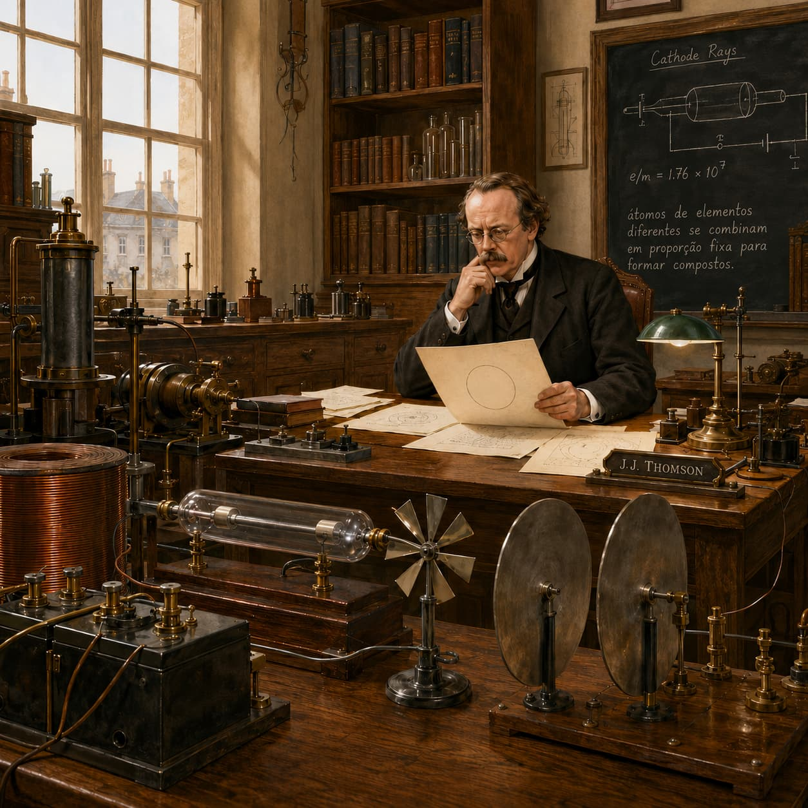

Assista à aulaCápsula do Tempo — 1897
Thomson: "Dalton acreditava que o átomo era uma esfera indivisível. Eu não tenho tanta certeza. Vamos investigar essa hipótese. Traga-me o tubo de vidro conhecido como Tubo de Crookes."
Experimentos realizados
O tubo de Crookes
raios catódicos
O cata-vento
os raios têm massa
As placas eletrodo
os raios têm carga negativa